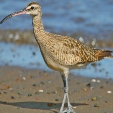

Whimbrel

¡Descubre al increíble Whimbrel!
- ¡Hola amiguito! El Whimbrel es un ave playera que a veces visita las mágicas Islas Galápagos.
- Su nombre científico es Numenius phaeopus, ¡un nombre curioso para un pájaro fascinante!
- Le encanta explorar las playas en busca de pequeños animales enterrados en la arena. ¡Es todo un detective del litoral!
- Aunque no sea tan colorido como otros pájaros, su largo pico curvado es su herramienta especial para encontrar comida.
- ¡Cuida y respeta su hábitat para que siempre podamos disfrutar de la belleza natural de Galápagos!
¡Descubre al Whimbrel en Galápagos!
- ¡Bienvenido a las Islas Galápagos, donde puedes encontrar al fascinante Whimbrel en tus paseos por la playa!
- Nombre Científico: Numenius phaeopus
- Aunque su plumaje no sea llamativo, su largo pico curvado es su distintivo. Búscalo en las playas galapagueñas durante tus caminatas costeras.
- Estado de Conservación: No amenazado. Asegúrate de disfrutar de su presencia respetando su espacio en la playa.
- ¿Sabías que estos pájaros son como detectives de la costa, usando sus picos largos para buscar insectos y pequeños animales enterrados?
- Observa con atención y aprecia la maravilla de la naturaleza en Galápagos. ¡Buen viaje!
Información para biólogos sobre el Whimbrel en Galápagos:
- Nombre Científico: Numenius phaeopus
- Estado de Conservación: No amenazado
- Distribución Geográfica: Costas y playas en varias regiones del mundo, migratorio en amplias áreas. Visitante ocasional en las Islas Galápagos.
- Descubrimiento y Nomenclatura: El nombre científico Numenius phaeopus ha sido utilizado por naturalistas para describir al Whimbrel.
- Hábitat: Costas, playas, áreas intermareales. Ocasionalmente presente en Galápagos durante sus migraciones.
- Origen: Nativo, pero su presencia en Galápagos es ocasional, ya que migra a través de la región.
- Presencia en el Hábitat: Regular durante las migraciones.
- Dieta: Insectos, gusanos y pequeños animales que encuentra en las áreas costeras.
- Pico Especializado: El pico largo y curvado le permite buscar alimento enterrado en la arena.
- Comportamiento de Migración: Realiza migraciones largas entre sus áreas de reproducción y sus áreas de invernada.
- Interacciones Ecológicas: Contribuye al equilibrio de las poblaciones de insectos en las áreas que visita.
- Curiosidades Biológicas: Aunque no destaca por su plumaje, su pico especializado lo convierte en un experto cazador en las costas.
- Nombres Relacionados: No hay nombres étnicos específicos.